Prayer Lock: image options (19 Oct 2026)
Each slot shows the current image, then 3 candidates exactly as they would be installed: hero 720×960 (arch, widget, darshan) above, and the square 480×480 thumb at 96px and 48px (round, as on the deity grid). All candidates are public domain, CC BY / BY-SA or Pexels License; source pages are linked. No AI images.
Unused files (not referenced anywhere in the app code, so no candidates were sourced): story/diya, mala, temple-bells, family-puja, crowd-phones.
Deity: ram
Current
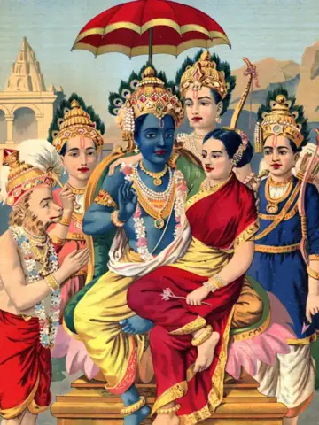
Currently shipped (see img/CREDITS.md)
Option 1
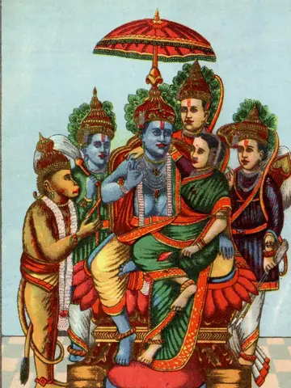
Public domain · Raja Ravi Varma
Ramapanchayan, Ravi Varma Press.jpg
Original 1032x1500 px
source page Option 2
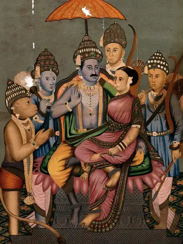
CC BY 4.0 · Wellcome Collection
Rama and Sita enthroned attended by Hanuman, Bharata and Lak Wellcome V0045046.jpg
Original 2354x3167 px
source page Option 3
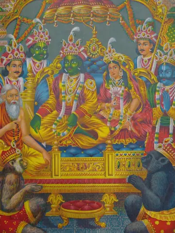
Public domain · British Museum scan
Popular print, album (BM 2003,1022,0.35 1).jpg
Original 1205x1600 px
source page
Deity: hanuman
Current
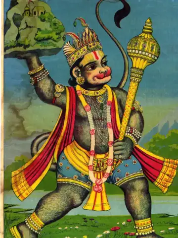
Currently shipped (see img/CREDITS.md)
Option 1
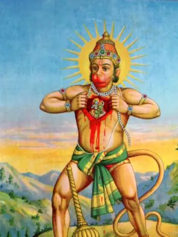
Public domain · Ravi Varma Press
Ravivarmapress.jpg
Original 1080x1569 px
source page Option 2
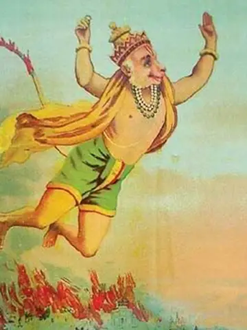
Public domain · Raja ravi varma
Lanka Dahan.jpg
Original 1100x1592 px
source page Option 3
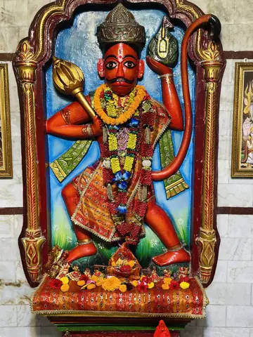
CC BY-SA 4.0 · AjayDas
Idol of Lord Hanuman at Hanuman Mandir, Thana Chariali, Dibrugarh 01.jpg
Original 2744x3810 px
source page
Deity: shiva
Current
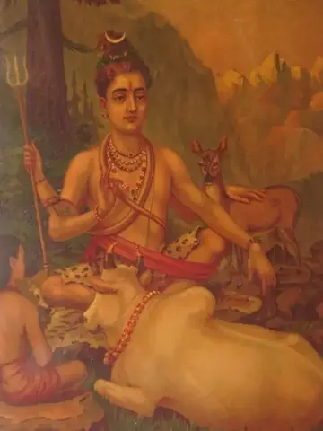
Currently shipped (see img/CREDITS.md)
Option 1
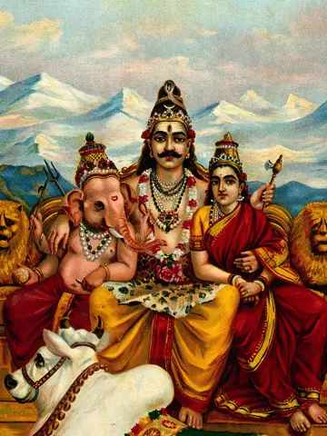
CC BY 4.0 · Wellcome Collection
Shiva, Parvati and Ganesha enthroned on Mount Kailas with Na Wellcome V0045136.jpg
Original 2307x3250 px
source page Option 2
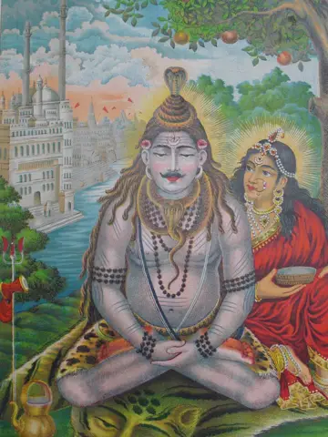
Public domain · British Museum scan
Popular print, album (BM 2003,1022,0.29).jpg
Original 1193x1600 px
source page Option 3
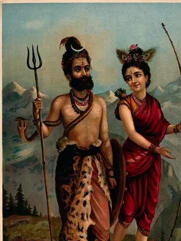
CC BY 4.0 · Wellcome Collection
Shiva as a Kirat (tribal Bhil huntsman) with a huntswoman. C Wellcome V0045125.jpg
Original 2338x3322 px
source page
Deity: krishna
Current
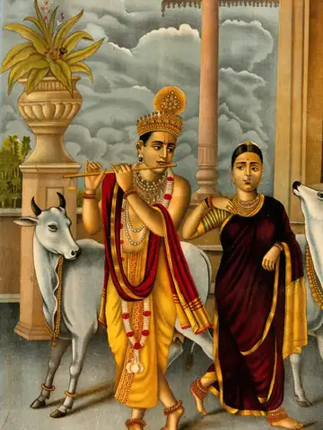
Currently shipped (see img/CREDITS.md)
Option 1
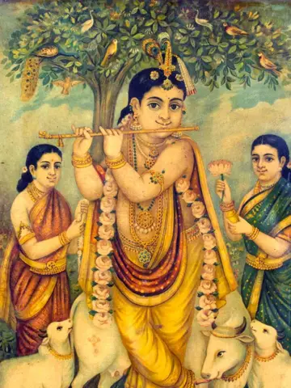
Public domain · Ravi Varma Press Malavi/Lonavla
VenugopalKrishna-CGRamanujam-RaviVarmaPressOleographPrint-IndianPainting 976d929e-9cb4-472
Original 1100x1581 px
source page Option 2
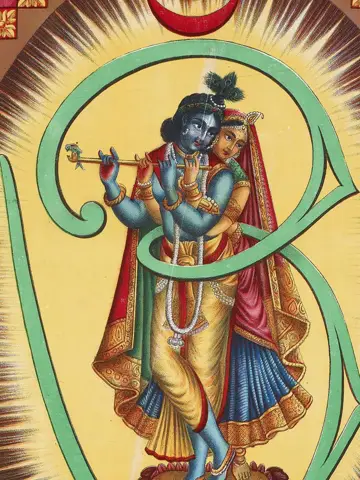
Public domain · British Museum scan
Popular print, album (BM 2003,1022,0.69).jpg
Original 1190x1600 px
source page Option 3
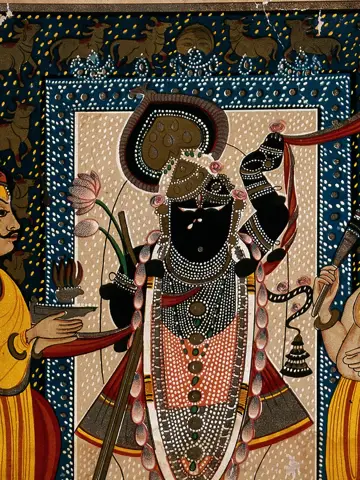
CC BY 4.0 · Wellcome Collection
Krishna with two worshippers, as worshipped in Nathdwara, Ra Wellcome V0044936.jpg
Original 2386x3214 px
source page
Deity: radha krishna
Current
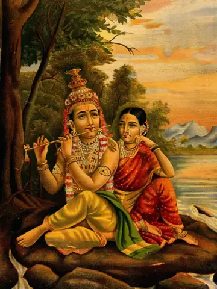
Currently shipped (see img/CREDITS.md)
Option 1
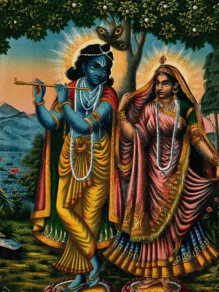
CC BY 4.0 · Wellcome Collection
Radha and Krishna on separate lotuses. Chromolithograph. Wellcome V0045038.jpg
Original 2346x3174 px
source page Option 2
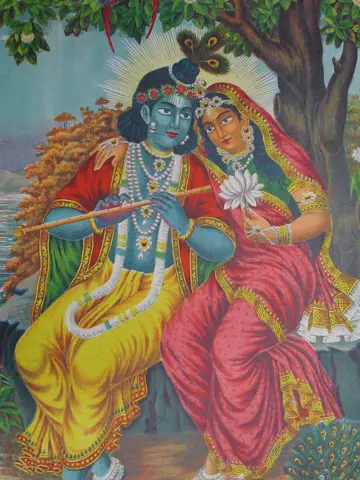
Public domain · British Museum scan
Popular print, album (BM 2003,1022,0.63 1).jpg
Original 1204x1600 px
source page Option 3
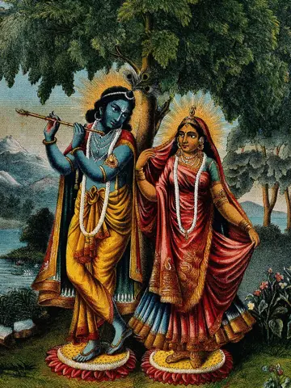
CC BY 4.0 · Wellcome Collection
Krishna and Radha on separate lotus leaves. Chromolithograph Wellcome V0045034.jpg
Original 2424x3156 px
source page
Deity: devi
Current
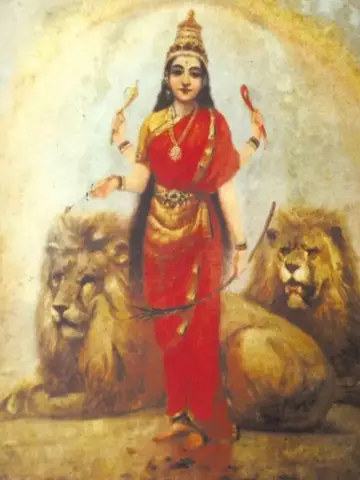
Currently shipped (see img/CREDITS.md)
Option 1
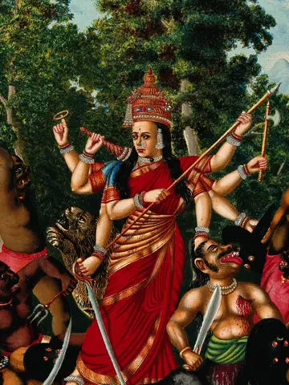
CC BY 4.0 · Wellcome Collection
Durga slaying the Buffalo Demon. Chromolithograph, 1883. Wellcome V0045083.jpg
Original 2364x2970 px
source page Option 2
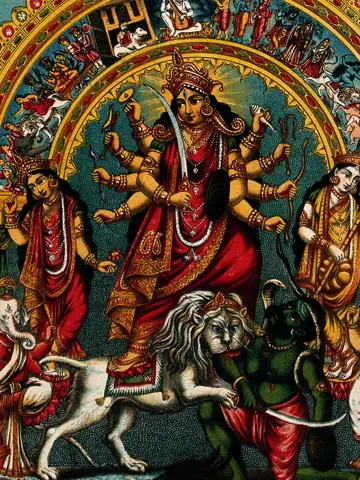
CC BY 4.0 · Wellcome Collection
Durga slaying the Buffalo Demon on a stand within a torana s Wellcome V0045020.jpg
Original 2350x3140 px
source page Option 3
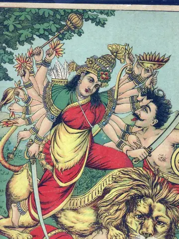
Public domain · Ravi Varma Press
Mahishasura-mardini.jpg
Original 1080x1560 px
source page
Deity: ganesha
Current
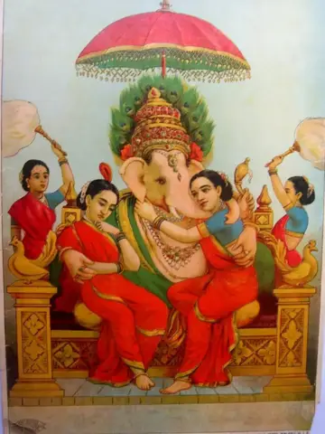
Currently shipped (see img/CREDITS.md)
Option 1
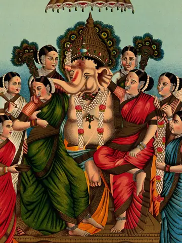
CC BY 4.0 · Wellcome Collection
Ganesha and his two wives, Siddhi and Buddhi, surrounded by Wellcome V0045084.jpg
Original 2364x3192 px
source page Option 2
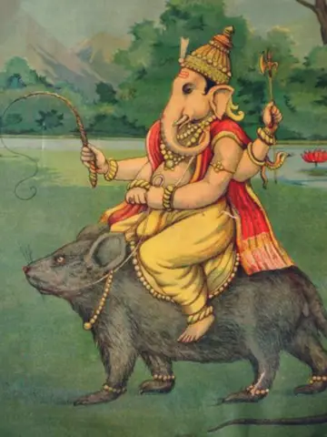
Public domain · Unknown (see source page)
Ganesh on his vahana, a mouse or rat.jpg
Original 1300x1733 px
source page Option 3
CC BY 4.0 · Wellcome Collection
Ganesha. Chromolithograph. Wellcome V0044933.jpg
Original 2388x3204 px
source page
Deity: murugan
Current
Currently shipped (see img/CREDITS.md)
Option 1
Public domain · A print, based on Raja Ravi Varma's painting, published by Ravi Udaya fal press
Devasenapati.jpg
Original 1080x1482 px
source page Option 2
CC BY-SA 4.0 · SandyWikia
Muththumalai Murugan.jpg
Original 1912x2704 px
source page Option 3
CC BY-SA 3.0 · R Shanmuga Sundaram
Batu caves Malaysia Murugan temple 02.JPG
Original 2736x3648 px
source page
Deity: venkatesha
Current
Currently shipped (see img/CREDITS.md)
Option 1
CC BY-SA 4.0 · Tshiv
Lord Balaji Ashland.jpg
Original 925x1752 px
source page Option 2
CC BY-SA 3.0 · Phanibandaru
Lord Balaji.jpg
Original 2848x4288 px
source page Option 3
CC BY-SA 3.0 · Karsolene
Malekallu Tirupathi-balaji, Arsikere.jpg
Original 768x1024 px
source page
Deity: vishnu
Current
Currently shipped (see img/CREDITS.md)
Option 1
CC BY 4.0 · Wellcome Collection
Vishnu flanked by two wives resting on Shesa, the serpent on Wellcome V0045133.jpg
Original 2344x3196 px
source page Option 2
CC BY 4.0 · Wellcome Collection
Vishnu accompanied by his wives riding on Garuda who carries Wellcome V0045132.jpg
Original 2274x3220 px
source page Option 3
CC BY 4.0 · Wellcome Collection
Vishnu and Lakshmi attended by Garuda and two attendants. Ch Wellcome V0045051.jpg
Original 2322x3184 px
source page
Deity: lakshmi
Current
Currently shipped (see img/CREDITS.md)
Option 1
CC BY 4.0 · Wellcome Collection
A heavily jewelled Lakshmi with a halo. Chromolithograph. Wellcome V0045081.jpg
Original 2399x3207 px
source page Option 2
CC BY 4.0 · Wellcome Collection
Lakshmi being annointed by the elephants of the directions. Wellcome V0045031.jpg
Original 2399x2983 px
source page Option 3
CC BY 4.0 · Wellcome Collection
Lakshmi on her lotus in the water with elephant. Chromolitho Wellcome V0045127.jpg
Original 2256x3112 px
source page
Deity: ayyappa
Current
Currently shipped (see img/CREDITS.md)
Option 1
CC BY-SA 4.0 · Stephen ronald 369
Lord Ayyappa old painting.jpg
Original 1290x2015 px
source page Option 2
CC BY-SA 4.0 · Tshiv
Lord Ayyappa Ashland.jpg
Original 1305x1719 px
source page Option 3
CC BY-SA 4.0 · Kaartic
Paintings of Ayyappan at Shree Dharmashasthagiri Ayyappa Swamy Temple, Huskuru (3) (18864)
Original 1550x3344 px
source page
Deity: sai
Current
Currently shipped (see img/CREDITS.md)
Option 1
Public domain · This image might not be in the public domain outside of the United States; this
Sai Baba of Shirdi with garland.jpg
Original 1331x2000 px
source page Option 2
Public domain · Unknown authorUnknown author
Shirdi Sai close-up.jpg
Original 955x1343 px
source page Option 3
Public domain · This image might not be in the public domain outside of the United States; this
Young Shirdi Sai Baba close-up.jpg
Original 1800x1285 px
source page
Deity: saraswati
Current
Currently shipped (see img/CREDITS.md)
Option 1
CC BY 4.0 · Raja Ravi Varma
Sarasvati with her sitar and peacock. Chromolithograph by R. Wellcome V0045121.jpg
Original 4099x5604 px
source page Option 2
Public domain · Raja Ravi Varma
Saraswati Devi.jpg
Original 7424x10588 px
source page Option 3
Public domain · Raja Ravi Varma
Saraswati Print.jpg
Original 2878x3822 px
source page
Story: ghat-sunrise
Current
Currently shipped (see img/CREDITS.md)
Option 1
CC BY-SA 2.0 · jeminichronicles
Morning Aarti of the Ganges at sunrise, Varanasi.jpg
Original 3000x4000 px
source page Option 2
Pexels License · Dmitry Voronov
Woman praying atop ghat, golden morning
Original 4672x7008 px
source page Option 3
Pexels License · AVICHAL LODHI
Saffron-clad man meditating on Varanasi ghat
Original 3941x4926 px
source page
Current
Currently shipped (see img/CREDITS.md)
Option 1
Pexels License · cottonbro studio
Man lying in bed, warm screen light
Original 4107x6160 px
source page Option 2
Pexels License · cottonbro studio
Girl in bed, phone-lit face, night
Original 4117x6176 px
source page Option 3
Pexels License · SHVETS production
Woman in dark bed, phone glow
Original 4160x6240 px
source page
Story: temple-morning
Current
Currently shipped (see img/CREDITS.md)
Option 1
Pexels License · Jagadeeshbabu Gnanasekaran
Jalakandeswarar gopuram, soft pastel twilight sky
Original 2932x3909 px
source page Option 2
Pexels License · Ram Iyengar
Nanjangud gopuram glowing warm golden light
Original 3024x4032 px
source page Option 3
CC BY-SA 4.0 · Vijaybhaskar.s
Hampi virupaksha temple sunrise.jpg
Original 3366x5048 px
source page
Story: morning-tea
Current
Currently shipped (see img/CREDITS.md)
Option 1
Pexels License · Mahesh E
Hand holding kulhad of milky chai
Original 3450x4189 px
source page Option 2
Pexels License · James
Hand holding chai glass at balcony
Original 2036x3620 px
source page Option 3
Pexels License · Sanket Sawale
Kulhad chai with ginger and cardamom
Original 3270x4905 px
source page
Story: young-pray
Current
Currently shipped (see img/CREDITS.md)
Option 1
Pexels License · Ventara Films
Young man with tilak praying, eyes closed
Original 4608x8192 px
source page Option 2
Pexels License · Ravi Roshan
Woman in saree, folded hands, riverside
Original 3456x5184 px
source page Option 3
CC BY-SA 2.0 · Nanak26
1 Hindu woman praying in river Ganges, Varanasi Puja.jpg
Original 1957x3284 px
source page